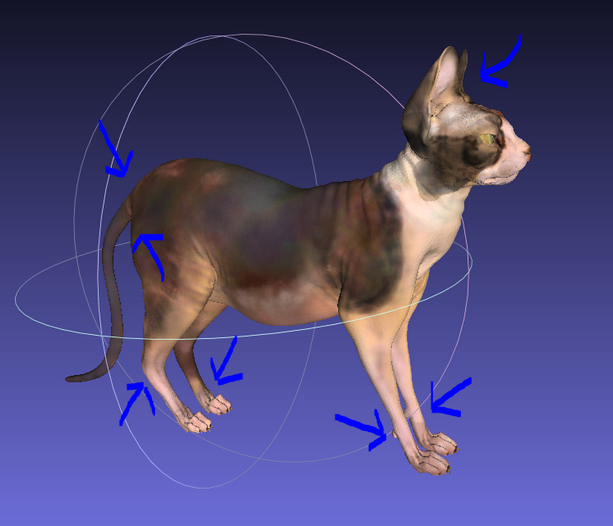

3D Printing
Dimitar Jordanov, Curtis McCord, Lauren Olar & Dawn Walker
November 26, 2015
3D Printing and
Additive Manufacturing (AM)
Slides can be nested inside of each other.
Use the Space key to navigate through all slides.
Basement Level 1
Nested slides are useful for adding additional detail underneath a high level horizontal slide.
Basement Level 1
Nested slides are useful for adding additional detail underneath a high level horizontal slide.
Business Perspective
Slides can be nested inside of each other.
Use the Space key to navigate through all slides.
Markets
Primary Markets
Secondary Markets
Emerging Markets
Business Models
Enabler for Design Optimization
Value Add By Customization
Cost Efficient Production Method
New Supply Chain Concepts
Repair by AM / Support Services
Emerging Models
Organizational Perspective
Slides can be nested inside of each other.
Use the Space key to navigate through all slides.
Motivations
Interactions and Relationships
Business Processes
Organizational Roles and Units
Information Perspective
3D Printing is not like the systems discussed previously
Information perspective focuses on the CAD packages used to create the object to be 3D printed
Physical Considerations
Need to keep in mind the physical aspects of the model
Size
Object needs to fit the printer and the needs of the user
- Size of the printer and what is to be printed
- For interlocking objects, consider how they fit together
- Size of the object the model will be used with/on (for example, jewelry)
Appendages
Some areas of a 3D printed object are vulnerable during and after printing. May changehow the model is posed or require additional support for the printing process.

http://www.shapeways.com/tutorials/how-to-prepare-your-render-animation-model-for-3d-printing
Cost
Some materials are very expensive to print with. For some objects, may want to hollow the object or create them thinner to save on material.
File Considerations
This aspect is more in line with traditional information perspective
Takes into account the CAD packages as a whole
Origin
Most organizations will create their own models to print. However, anyone with access to 3D modelling software would create one.
Online communities, such as Shapeways, offer a place for people to upload designs to be printed and shipped.
Reliability / Trustworthiness
This aspect will depend on the origin of the model
- Most likely accurate when created within organization
- If created by amateur and uploaded, may not be very reliable
- Uploaded models may be malformed and unsuitable for printing
Privacy / Security
3D Printers do not care what they are printing
Users are able to print whatever they can create
Organizations should consider encyrption and passing the files through secure servers
Interoperability
3D modelling applications each offer different metadata structures
- Some use custom file formats
- stereolithographs - .stls are the common standard
- .stls often parsed into .gcode format
Application System Perspective
“Even when a design has been optimized specifically for the process, it often takes dozens of tries before a functional part comes out of the printer. And the process of troubleshooting a failed build–even at the most advanced ... shops in the world–still involves a lot of trial and error.”
Wright, S ; 2015
"3D Printing Titanium and the Bin of Broken Dreams"
Core Functionalities
3D printing requires a diverse ecosystem of information, labout, workflows, and applications. Although models can be acquired that are ready-made for printing, there is, in fact, a more expanded, general process that describes the core functionalities of a 3D printing ‘system’, which can include dimensions of both design and manufacturing.
3D Modelling
Depending on their existing design processes, organizations will have various needs when it comes to integrating 3D printing qua manufacturing process. There is already an established ecosystem of modelling applications that are integratable with a 3D printing workflow. The type of modelling software selected affects not only the software architecture, but the price, capabilities, and the amount of training needed to operate them.
Parametric modelling softwares such as Solidworks, Autodesk Fusion or Blender (shown above) allow users to create objects by changing dimensions or by extruding faces. Some of these programmes have been mainstays of the modelling craft for years, and have steep learning curves. They are very complex, and allow many parts to be represented in assemblies.
Direct modelling softwares, such as MeshMixer use brushes to sculpt or shape objects directly. These softwares may be unsuitable for modelling large part assemblies but might also be the best option for repairing found models or 3D scans.
Slicing
Printing Processes
Types of 3D Printers
Fused Deposition Modelling (FDM)
Stereolithography (SLA)
Selective Laser Sintering (SLS)
Evolution and the Future of 3D Printing
Open Source 3D Printing
Requirements & Design
Slides can be nested inside of each other.
Use the Space key to navigate through all slides.
Modelling Languages
Special Challenges
Throughput
Scalability
Extensibility
Usability
Interoperability
Reliability
Standards & Guidelines
Slides can be nested inside of each other.
Use the Space key to navigate through all slides.